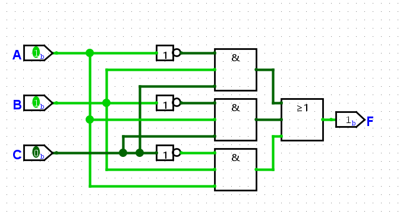
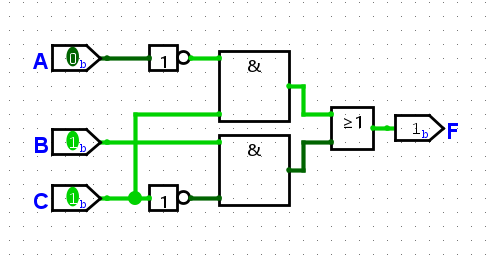

Third week's assignments
$$\overline{\overline{A}+B}=\overline{\overline{A}}\cdot\overline{B}=A\cdot\overline{B}$$
$$\overline{A \cdot \overline B \cdot \overline C} \rightarrow \overline A + \overline{\overline B} + \overline{\overline C} = \overline A + B + C$$
$$\overline{(\overline A + B) \cdot (A + \overline B)} \rightarrow (\overline{\overline A} \cdot \overline B) + (\overline A \cdot \overline{\overline B}) = (A \cdot \overline B) + (\overline A \cdot B)$$
Truth table
| Row | A | B | F | |
|---|---|---|---|---|
| 0 | 0 | 0 | 1 | ← SOP |
| 1 | 0 | 1 | 0 | ← POS |
| 2 | 1 | 0 | 1 | ← SOP |
| 3 | 1 | 1 | 0 | ← POS |
In the Sum of Products (SOP) we need to find where the function F has a value 1.
$$F(A,B) = \overline A \cdot \overline B + A \cdot \overline B$$
$$F(A,B) = m0 + m2$$
$$F(A,B) = Σm(0,2)$$
In the Product of Sums (POS) we need to find where function F has a value 0.
$$F(A,B) = (A + \overline B) \cdot (\overline A + \overline B)$$
$$F(A,B) = M1 \cdot M3$$
$$F(A,B) = ΠM(1,3)$$
Truth table for F:
$$F(A,B) = A \overline B + B$$
| A | B | F | Calculation |
|---|---|---|---|
| 0 | 0 | 0 | ← $$F(0,0) = 0 \cdot \overline 0 + 0 = 0 \cdot 1 + 0 = 0$$ |
| 0 | 1 | 1 | ← $$F(0,1) = 0 \cdot \overline 1 + 1 = 0 \cdot 0 + 1 = 1$$ |
| 1 | 0 | 1 | ← $$F(1,0) = 1 \cdot \overline 1 + 1 = 1 \cdot 0 + 1 = 1$$ |
| 1 | 1 | 1 | ← $$F(1,1) = 1 \cdot \overline 0 + 1 = 1 \cdot 1 + 1 = 1$$ |
Truth table for G:
$$G(A,B) = (A+B) \cdot (\overline A + \overline B)$$
| A | B | G | Calculation |
|---|---|---|---|
| 0 | 0 | 0 | ← $$G(0,0) = (0+0) \cdot (\overline 0 + \overline 0) = 0 \cdot (1+1) = 0$$ |
| 0 | 1 | 1 | ← $$G(0,1) = (0+1) \cdot (\overline 0 + \overline 1) = 1 \cdot (1+0) = 1$$ |
| 1 | 0 | 1 | ← $$G(1,0) = (1+0) \cdot (\overline 1 + \overline 0) = 1 \cdot (0+1) = 1$$ |
| 1 | 1 | 0 | ← $$G(1,1) = (1+1) \cdot (\overline 1 + \overline 1) = 1 \cdot (0+0) = 0$$ |
Jamie's code:
if not (not L or not C or not R):
full_speed()
$$(\overline{\overline{L} + \overline{C} + \overline{R}}) = \overline{\overline L}\cdot \overline{\overline C} \cdot \overline{\overline R} = L + C + R$$
If the robot is on the charger, the sensors' values are 1:
$$L \cdot C \cdot R = 1 \cdot 1 \cdot 1 = 1$$
This returns True, and the robot should now run the function full_speed().
If the robot is not on the charger, the sensors' values are 0:
$$L \cdot C \cdot R = 0 \cdot 0 \cdot 0 = 0$$
this returns False, which doesn't run the wanted function.
Therefore, Jamie's if-statement is incorrect.
Function for Jamie's charging station:
If all the 3 sensors return a True, the robot is in the correct position.
Jamie noticed that if exactly two sensors are on the station, rotating the robot will bring it into correct alignment, making all three sensors return True.
| A | B | C | Move robot (F) |
|---|---|---|---|
| 0 | 0 | 0 | 0 |
| 0 | 0 | 1 | 0 |
| 0 | 1 | 0 | 0 |
| 0 | 1 | 1 | 1 |
| 1 | 0 | 0 | 0 |
| 1 | 0 | 1 | 1 |
| 1 | 1 | 0 | 1 |
| 1 | 1 | 1 | 0 |
$$ F(A, B, C) = \overline{A} B C + A \overline{B} C + A B \overline{C} $$

With the values: A = 0, B = 1 and C = 1
$$F = \overline A \cdot B + B \cdot \overline C$$

$$G = (A + B) \cdot (\overline B + \overline C)$$